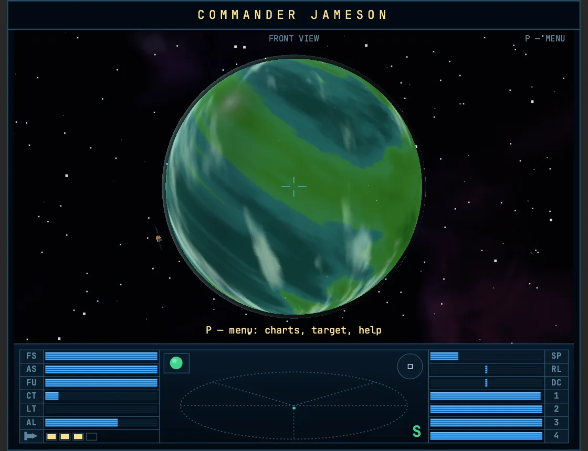
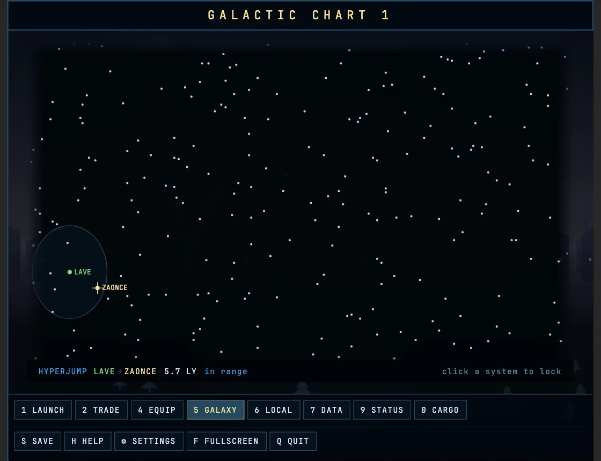
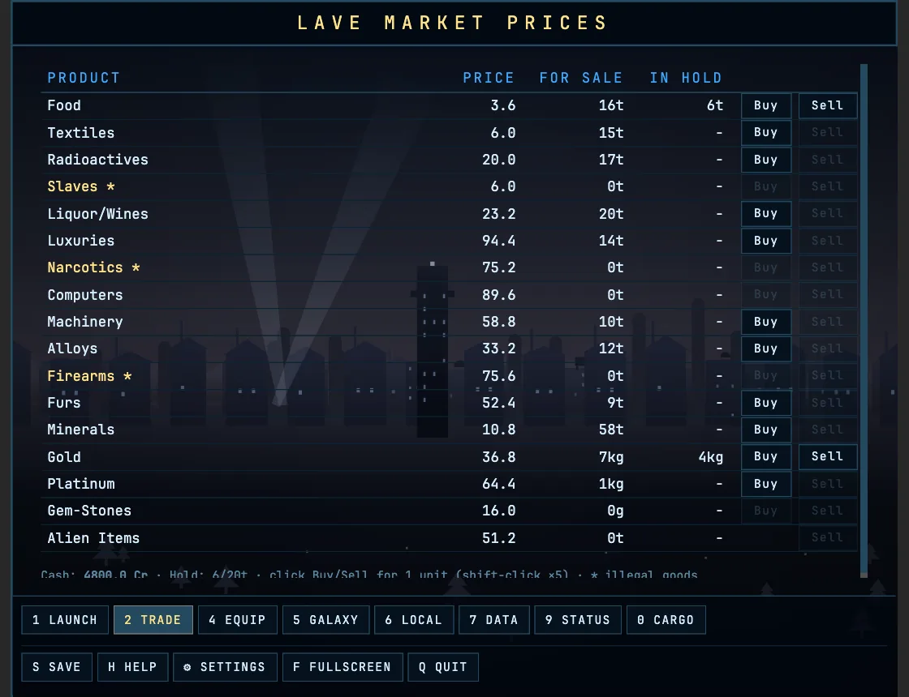

A ship, an empty hold and a sky nobody has finished mapping — where you point it is the whole game.
Early access
Free for the whole of early access. Playable end to end and still moving: anything here can be different in the next build.
Looking up the newest build…
No install, no account. The same game, in the tab — it needs WebGL 2 and a keyboard.
You start docked at Lave with a Cobra Mk III, 100 credits and an empty hold. Everything after that is yours.
Agricultural worlds sell food and furs and want machinery; industrial worlds are the reverse. Some cargo is illegal in some jurisdictions, which is where the money is.
Launch, line up the planet, and cross the system on the torus drive — it cuts out the moment anything gets close enough to mass-lock you. Docking is by hand unless you buy the computer.
Pirates spawn by the government of the system you are in. An anarchy is a shooting gallery; a corporate state is a quiet commute. Kills move you up the same ladder as the original — Harmless, and eventually, almost never, Elite.


